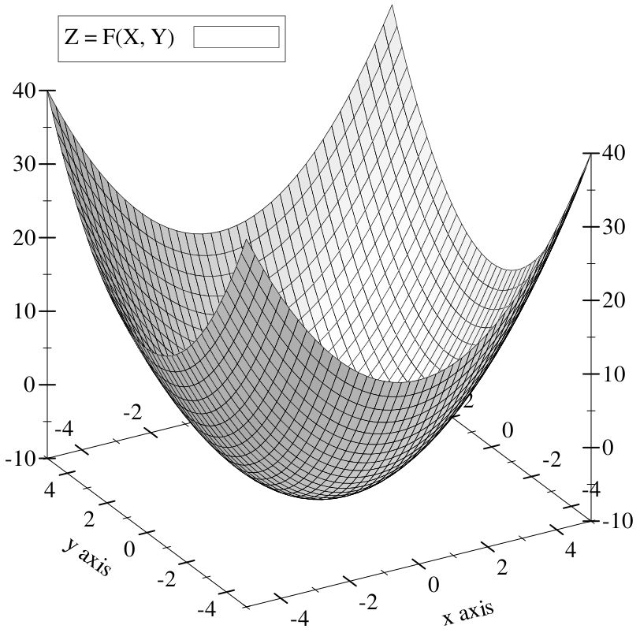
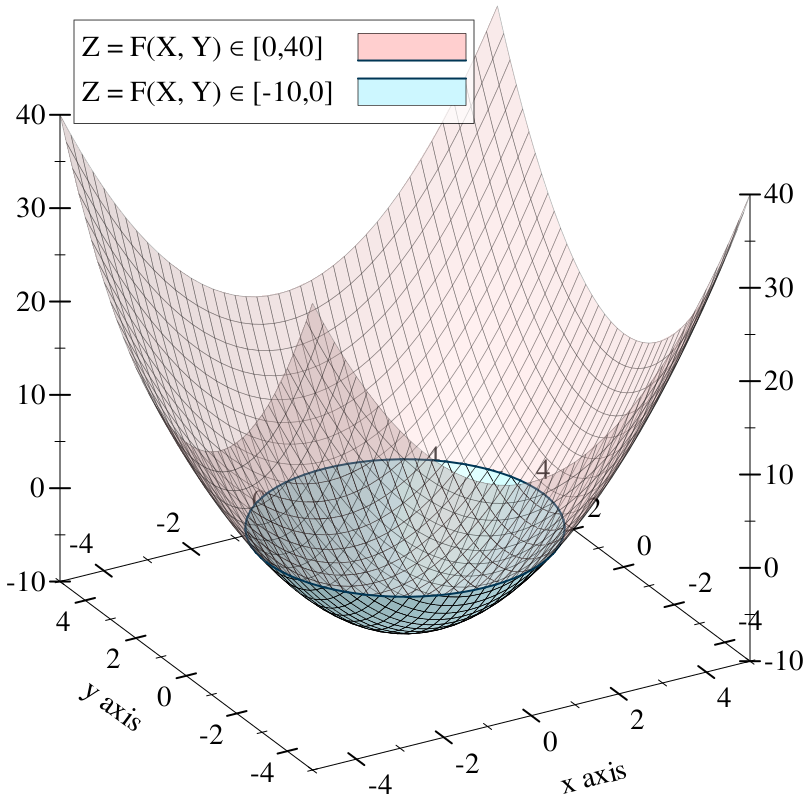
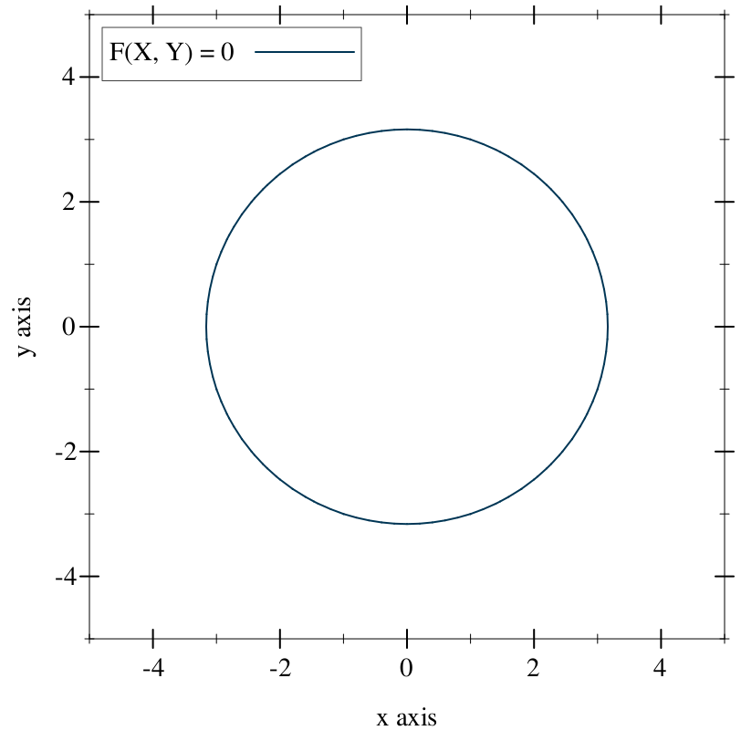
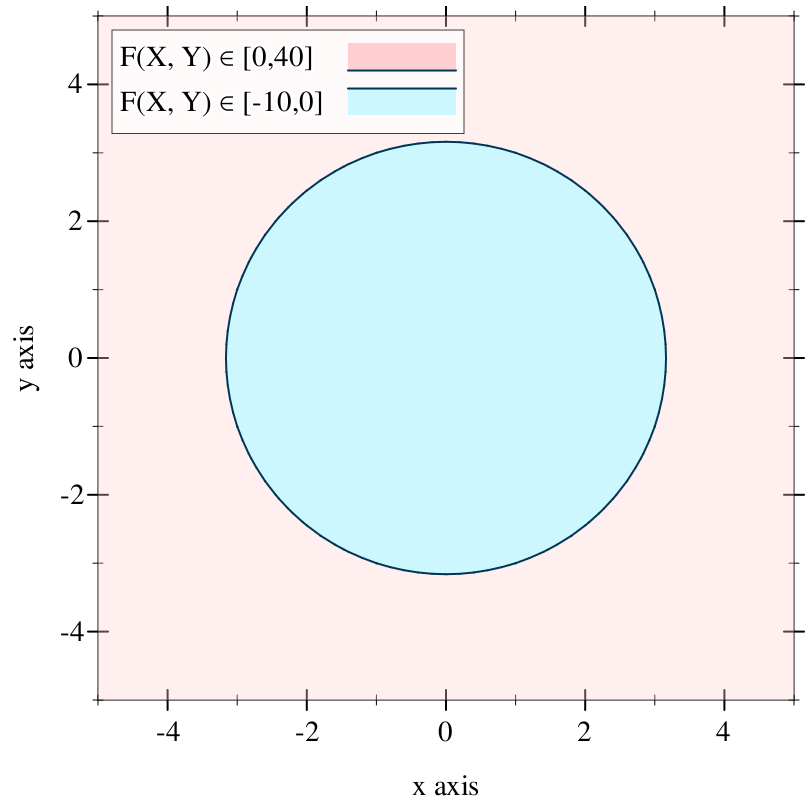
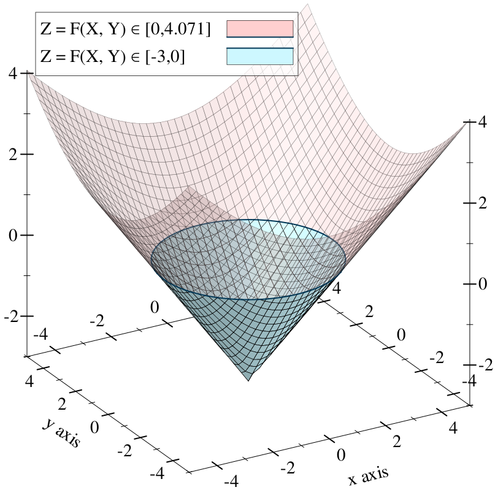

5 Internals
5.1 The Math Bits
This section goes into detail on how Ruckus represents solid objects internally, which may help to explain why it behaves the way it does.
5.1.1 Implicit Surfaces and the Function Representation
In 3D graphics, surfaces are often represented explicitly by polygons along their boundary. This is not the only way to do it.
An implicit surface (Wikipedia) is a surface defined by the value of a field in space. By a "field," we mean a quantity that is measurable at every point in space. In the real world, the quantity might be density or electrical charge. Given a field, the implicit surface exists where the field is zero.
That was abstract. Let’s consider this in two dimensions. We can define a two-dimensional scalar field using an equation that maps X and Y to a number, such as:
(((sqr x) . + . (sqr y)) . - . 10)
We can graph this equation by using its result as a height level above the XY plane.

The heightfield intersects and dips beneath the XY plane in the center of the bowl shape:

The intersection of the heightfield with the XY plane is outlined in the plot above. This is the (infinite) set of XY points where our field level is zero. If we forgo the fancy 3D plot and draw these points on a Cartesian plane, we get a circle:

The set of points where the field is zero forms a two-dimensional implicit surface. One could even say that our equation is an implicit circle. This notion, that of identifying the equation with the surface it represents, is the function representation (Wikipedia), or f-rep. There are other representations of implicit surfaces, including data structures that directly describe geometric operations, or discretely sampled grids of field values.
Ruckus models solid objects using implicit surfaces in the function representation.
Because the objects are solid, they are not merely surfaces: they are oriented surfaces, with a distinct inside and outside. Specifically, Ruckus takes the perspective that any negative field value is "inside." This means that, in our running example, we have not just a circle but a solid disk:

5.1.2 Signed Distance Fields
F-rep is interesting because it makes certain kinds of common operations on
shapes easier: intersection, subtraction, outsetting, filleting, and more. But
it isn’t all roses. It’s cheap to determine whether a given point is on the
surface of an f-rep object —
This class of traversal optimization for signed distance fields was first described, as far as I can tell, by John C. Hart in his paper Sphere tracing: a geometric method for the antialiased ray tracing of implicit surfaces (PDF).
This can be made cheaper for functions with certain characteristics. In
particular, there is a class of function called a signed distance
field that is a subset of the f-rep objects we’ve discussed so far. In a
signed distance field, the field value at a point not only indicates whether
the point is inside, outside, or on the surface of an object —
The equation we’ve been using so far is not a signed distance field, but we can alter it slightly so that it becomes one. Namely, we can make it into the Euclidean distance metric:
((sqrt ((sqr x) . + . (sqr y))) . - . 3)
This measures the length of the vector (x, y) using the Pythagorean theorem, and subtracts 3 so that the roots appear in a circle exactly three units away from the origin. It’s a circle with radius 3:

Compared to general f-rep implicit surfaces, signed distance fields allow for
some valuable optimizations. Sampling the field at any point gives the exact
distance to the nearest surface. If the field value is positive, one can infer
that there is no solid within a circle (in 2D) or sphere (3D) around the sample
point —
Iñigo Quilez has collected a wonderful menagerie of exact signed distance field functions for common primitives.
While it’s possible to analytically construct signed distance fields for many kinds of objects, it’s difficult to maintain a perfect distance field as objects are transformed, composed, or intersected. Certain apparently elementary transformations, such as scaling an object along only one axis, cannot be performed on a signed distance field f-rep solid.
So we have to loosen the rules a little.
5.1.3 The Lipschitz Criterion
Consider that a signed distance field works because we can predict its slope (the magnitude of its gradient vector). It’s exactly one: for every unit we move away from the surface, the field increases by one. This means we can assume that, given a field value v = F(x, y), there are no roots within v units in any direction of the point (x, y).
A bound on the slope of a field is known as the Lipschitz criterion (Wikipedia), and a function that is Lipschitz-continuous has a definite bound on its slope called its Lipschitz number. It’s usually written as a lowercase lambda (λ) but in the Ruckus sources, it’s written L.
A signed distance field has Lipschitz number 1. The optimization described above actually applies to any field with Lipschitz number between zero and one. It relies on the ability to derive an unbounding sphere for any point in space, so that it can skip forward with no risk of missing a surface. But it remains correct, if not quite as optimal, if we can only derive a conservative underestimate of the unbounding sphere. In other words, it’s okay if our unbounding spheres are wrong, as long as they’re too small rather than too large. Fields with this property are signed distance bound fields.
It is difficult to maintain a strict signed distance field under arbitrary transformations; it is much easier to maintain a definite Lipschitz number in a signed distance bound field. In Hart’s Sphere Tracing paper he presented a set of rules for maintaining Lipschitz continuity across transformations; more have since been discovered.
Ruckus represents solids as signed distance bound fields (0 < L <= 1).
5.2 The Ruckus Compiler
5.2.1 The Ruckus Language Module
Racket has built-in support for stuff like this, which is why I used it to implement Ruckus in the first place.
The Ruckus language is implemented as a set of rewrite rules that produce valid Racket code at the design level. These rewrite rules are invoked on any file that starts with:
#lang ruckus
The rewrite rules allow Ruckus forms defining geometry to be used at the
top-level of a Ruckus design language file, while postponing their actual
evaluation so that it doesn’t occur during require. This is handy,
because it’s often useful to instantiate an assembly at the top level of a file
so that it can be viewed or exported —
5.2.1.1 Rewrite Example
Here’s an example. It defines a reusable 2D bolt pattern, and locally defines an extruded part to demonstrate the pattern for visual checking.
#lang ruckus ; Bolt parameters, not provided for other designs. (define bolt-spacing 25.4) (define bolt-diameter 4.5) ; Bolt pattern. (define (bolt-pattern) (define half-sp (bolt-spacing . / . 2)) (for* ([x '(-1 1)] [y '(-1 1)]) (at (list (* half-sp x) (* half-sp y)) (circle #:diameter bolt-diameter)))) ; Publish the bolt pattern for reuse (provide bolt-pattern) ; To help visualize the pattern, make a simple part around it: (extrude 10 (difference (rect (* bolt-spacing 2) (* bolt-spacing 2)) (bolt-pattern)))
If this were a Racket module, any code written at the top level (outside of a define or certain other forms that postpone execution) would be evaluated the instant this module were require-d by another. Ruckus rewrites the module into the following Racket code:
#lang racket ; This require is implicitly inserted into any Ruckus-language file. (require ruckus) (define bolt-spacing 25.4) (define bolt-diameter 4.5) (define (bolt-pattern) (define half-sp (bolt-spacing . / . 2)) (for* ([x '(-1 1)] [y '(-1 1)]) (at (list (* half-sp x) (* half-sp y)) (circle #:diameter bolt-diameter)))) (provide bolt-pattern) ; Top-level geometry is wrapped in a function. ; ; Note: magical-generated-name is not the actual name of this function. ; It's actually a name generated to be unique. (define (magical-generated-name) (extrude 10 (difference (rect (* bolt-spacing 2) (* bolt-spacing 2)) (bolt-pattern)))) ; The function is exported in a submodule, under a known name, ; so that the Ruckus tools can find it. (module* ruckus-metadata #f (provide top-level-thunk) (define top-level-thunk magical-generated-name))
We can infer a couple of things from this example.
First, the name ruckus-metadata must not be used in a design, because the Ruckus design language rewrite rules are going to produce a submodule with that name.
Second, we don’t actually have to write designs using the Ruckus design language. We can write them in Racket, or Typed Racket, or standard Scheme, or any other language supported by the Racket tools.
5.2.1.2 Using Another Racket Language
Here’s a design written in the core Racket language instead of the Ruckus design language. You can work in whichever language you prefer, but you’ll have to manually perform the rewrite described above.
#lang racket ; Must import Ruckus facilities manually. (require ruckus) ; Wrap our top-level assembly in a function. Name doesn't matter. (define (assembly) ; Ruckus language forms are available after (require ruckus) (sphere 300)) ; Expose this as a Ruckus design to the Ruckus tools. (module* ruckus-metadata #f (provide top-level-thunk) (define top-level-thunk assembly))
5.2.2 Building the AST
Ruckus designs are Racket code, not data structures. This means that a geometric construct like
(sphere 100)
is not simply a datum, but a syntactic form that can be evaluated to produce a result. But what result? Ruckus designs don’t record the value of geometric forms like sphere, but clearly they are having an effect.
Ruckus’s design language forms are side-effecting. Evaluating a form like sphere attaches information about the requested geometry to a behind-the-scenes data structure known as the EDSL stack.
As these forms are evaluated, they build up an abstract syntax tree or AST structure. This is a data structure that describes a part or assembly at roughly the same level of abstraction as a design module: primitives like spheres and combinators like union are represented explicitly at this level.
Because of the behind-the-scenes support for Ruckus forms, you will encounter an error if you try to evaluate one in some arbitrary context, like the Racket REPL. Ruckus provides the call-with-edsl-root function to evaluate some geometry and return the AST. Details below.
You can also view the AST for a given design file using the ruckus-dump-ast tool.
5.2.2.1 The AST Node Structure
| (require ruckus/core/model) | package: ruckus |
struct
(struct node (type atts children) #:extra-constructor-name make-node #:transparent) type : symbol? atts : dict? children : (listof node?)
node-type: a symbol indicating the type of node, such as 'sphere or 'union.
node-atts: a collection of attributes for the node, keyed by symbol. Currently this is always an association list, but anything conforming to the dict protocol will work.
node-children: a list of child nodes, which may be empty for nodes (like sphere) that have no children.
node-id: a unique identifier filled in during the rewrite pass (below).
node-color: a color assigned by the color form, or #f for the default.
5.2.2.2 The EDSL Evaluator
| (require ruckus/lang/evaluator) | package: ruckus |
Returns the node that results from evaluating any Ruckus design language forms inside p. If there are no such forms, the result is an empty node.
call-with-edsl-root is mostly useful if you are implementing tools that interact directly with Ruckus designs, or want to experiment with Ruckus design language forms in the REPL:
> (require ruckus) > (sphere 100) first: contract violation
expected: (and/c list? (not/c empty?))
given: '()
> (require ruckus/lang/evaluator) > (call-with-edsl-root (lambda () (sphere 100))) (node 'root '() (list (node 'sphere '((radius . 100)) '())))
The result of call-with-edsl-root is always of node-type 'root, and is non-canonical. To fix this, apply canonicalize.
5.2.3 AST Rewriting
The AST rewrite pass is responsible for canonicalizing the AST and enumerating the leaf nodes.
5.2.3.1 Canonicalization
| (require ruckus/core/compiler/canon) | package: ruckus |
Rewriting 'root nodes into 'union.
Converting nodes with many children into binary trees.
Flattening combinators with a single child node.
Combining nested transforms that can be combined (e.g. nested at forms).
Identifying and removing do-nothing transforms (e.g. translation by zero).
The result of canonicalize may be:
Zero nodes, if the node contents were completely eliminated by flattening and combining,
One node, or
Many nodes, if n represented a do-nothing transform with several children.
If n is known to be a 'root node, of the form returned from call-with-edsl-root, then the "many nodes" case won’t happen.
You can view the result of canonicalization on a design using ruckus-dump-ast -c.
5.2.3.2 Enumeration
| (require ruckus/core/compiler/enumerate) | |
| package: ruckus | |
This is used in later phases that need to discriminate between different parts of a surface, e.g. to change colors or material properties.
5.2.4 Lowering to Ruckus IR
| (require ruckus/core/compiler/lower) | package: ruckus |
After the AST is canonicalized and enumerated, we lower it to a different form: the Ruckus Intermediate Representation, or IR. This breaks down complex operations like smooth-union or radial-repeat into graphs of more primitive operations. As a result, it loses most of the high-level structural information present in the AST, but makes it much easier to perform target-specific code generation and optimization.
The Ruckus IR is a static single assignment code for describing branchless arithmetic trees as value flow graphs. IR programs are pure and the evaluation semantics (e.g. eager, lazy) are not specified. IR code looks vaguely like an assembly language represented using s-expressions with an infinite register set.
The goal of an IR program is to simultaneously evaluate the Lipschitz-continuous signed distance bound field, and to produce the node-id of the nearest surface. Value ("register") zero contains the "query point," the point in 3-space where the field is being evaluated.
You can view the IR for a design using the ruckus-dump-ir tool. Here is a design and its IR; the sections below will go into more detail about what this means.
#lang ruckus (difference (at '[10 0 0] (cube 170)) (sphere 100))
'( (assign3f 1 (sub 3 (r 0) (c3f #(struct:vec3 10 0 0)))) (assignf 2 (box (c3f #(struct:vec3 85 85 85)) (r 1))) (assignu 3 (cu 0)) (assignf 4 (sphere (cf 100) (r 0))) (assignu 5 (cu 1)) (assignf 6 (sub 1 (cf 0) (r 4))) (assignf 7 (max (r 2) (r 6))) (assignu 8 (choose (> (r 2) (r 6)) (r 3) (r 5)))) ; Signed distance bound in value 7 ; Dominating node ID in value 8
5.2.4.1 Assignments
An IR program consists of a list of value assignments. Each assignment defines a new register (by number) whose value is the content of a particular expression. The general form is:
'(assign-type register-number expression)
'(assignf r e) evaluates e for a floating point result, which gets stored in register number r.
'(assignu r e) evaluates e for an unsigned integer result, which gets stored in register number r.
'(assign3f r e) evaluates e for an 3-vector floating point result, which gets stored in register number r.
It’s an error if a single Ruckus IR sequence contains two assignments to the same register number. Because register zero is predefined, an IR program should also not contain an assignment to register zero.
5.2.4.2 Expressions
Expressions have a form similar to Racket expressions: they are lists with the function first and some number of arguments after that:
'(operation-type arg1 arg2 ...)
For a precise list of operation types permitted, see ruckus/core/compiler/racket. Here are some examples for illustrative purposes:
'(r n) is the value in register n.
'(cf x) is a floating point constant with value x.
'(cf3 x y z) is a 3-vector floating point constant.
'(add dim a b) adds the result of two expressions a and b, which must have dimension dim (e.g. 1 for scalar, 3 for e-vector, etc.). The result has the same dimension.
'(choose flag a b) is equivalent to Racket if or C’s ternary operator: depending on the value of expression flag, the choose expression evaluates to one of the expressions a (if true) or b (if false).
Unlike most assembly languages, expressions in Ruckus IR can be arbitrarily nested. The following is a valid assigment in Ruckus IR:
'(assignf 10 (add 1 (r 6) (mul 1 (cf 3) (r 7))))
That’s essentially equivalent to the Racket code
(define r6 ...) (define r7 ...) (define r10 (+ r6 (* 3 r7)))
5.2.4.3 Value Pruning
Because the default IR programs compute two different things simultaneously
—
Note that, in general, computing the dominating node ID is more expensive than computing the distance field bound, even after pruning.
You can see the result of pruning on a design by passing the -p switch to the ruckus-dump-ir tool.
5.2.5 Target Backends
Ruckus does not interpret or execute Ruckus IR programs directly. The target backends are responsible for transforming Ruckus IR code into some form of executable code.
There are currently two backends implemented, one that generates Racket, and one that generates the OpenGL Shader Language (GLSL).
5.2.5.1 The Racket Backend
| (require ruckus/core/compiler/racket) | package: ruckus |
The Racket backend is the simplest backend, and the first one to read if you’re curious. It converts nodes into functions (going through IR internally).
The functions returned in both cases are produced by eval, not interpreted at the IR level.
The backend works by recursively rewriting IR expressions into equivalent Racket expressions, and using let forms to declare Racket variables corresponding to IR values. (Value number 12 produces a variable named r12.)
You can view the Racket code corresponding to a design using the ruckus-dump-rkt tool.
5.2.5.2 The GLSL Backend
| (require ruckus/viz/glsl) | package: ruckus |
The GLSL backend is more complicated than the Racket backend, because GLSL is a C-style braces-and-semicolons language with explicit type declarations. (It’s still only about 100 lines of code.)
You can view the GLSL code corresponding to a design using the ruckus-dump-glsl tool.